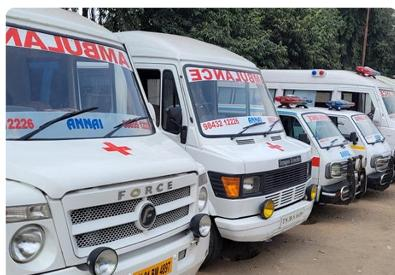
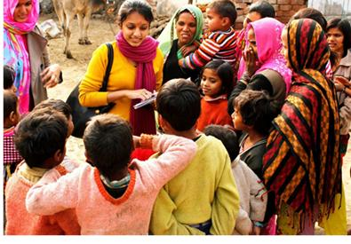
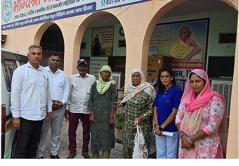
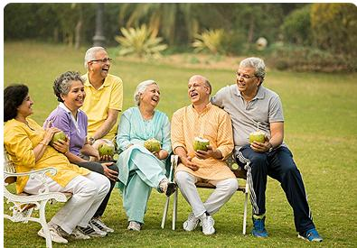

Help When It Matters Most
Annai Foundation has provided emergency assistance to approximately 250 accident victims, helping people receive support during urgent situations.

A Final Farewell With Dignity
Annai Foundation reports conducting the final rites of 320 individuals, supporting people who had no adequate family or community assistance.

Bringing Families Back Together
The foundation supports vulnerable people in reconnecting with their relatives and reuniting with their families, helping restore dignity and belonging.

Care, Comfort & Dignity
Annai Foundation supports destitute elderly people by helping them access care homes, essential support and basic necessities.
Our Journey & Milestones
Tracing back the footprint of Annai Foundation from its early roots to recent community expansion.
Foundation Registration
Annai Foundation was formally registered as a Charitable Trust in India with a mission of structural rural upliftment.
Emergency Support
The foundation developed its community-service activities around emergency assistance, healthcare support, ambulance services and humanitarian response.
Humanitarian Services
The foundation continued community-oriented activities in Karaikal, including humanitarian assistance and emergency-response work.
Community Impact
The foundation developed its community-service activities around emergency assistance, healthcare support, ambulance services and humanitarian response.
Continuing the Mission
Annai Foundation continues its work through emergency medical services, ambulance support, social welfare, livelihood support, child welfare, education.